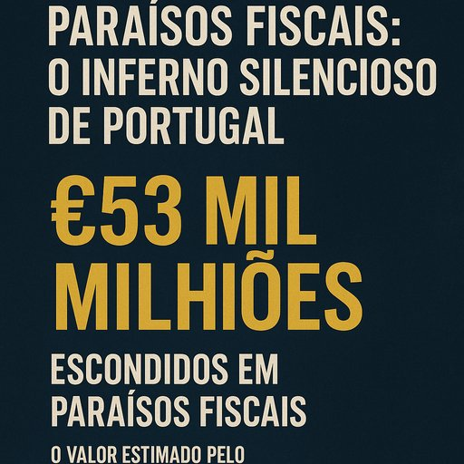

Publicado em 2025-07-06 09:47:40
€53 mil milhões.
Esse é o valor estimado que os portugueses — ou melhor, uma minoria muito bem colocada — escondem em paraísos fiscais. Um quinto do nosso PIB. Um quinto da riqueza que deveria circular no país, servir o povo, pagar escolas, hospitais, pensões e transportes — mas que, em vez disso, está a render juros no Luxemburgo, nas Ilhas Virgens, nas Caimão e noutras zonas de sombra da economia global.
Segundo o Observatório Fiscal da União Europeia, esta riqueza oculta levou, só em 2020, a uma perda superior a €500 milhões em receitas de IRC. Metade de milhar de milhão de euros por ano que desaparece — sem bomba, sem rebentamento, sem notícias de abertura. Um buraco orçamental limpo, elegante, sem sangue. Um assalto discreto e legalizado.
Quem paga?
O trabalhador por conta de outrem, claro.
A microempresa do bairro.
O reformado com o recibo de pensão tributado até ao último cêntimo.
A lógica é simples: quem tem pouco, paga muito; quem tem muito, paga fora.
Enquanto isso, as multinacionais “portuguesas” transferem lucros para outras jurisdições e declaram cá o suficiente para parecerem legais. E os nossos políticos? Limitam-se a arquivar escândalos, abafar investigações, ou — mais frequentemente — fazer de conta que não veem.
Esta realidade gera efeitos que vão além da economia.
Gera desigualdade.
Gera desconfiança institucional.
E gera uma classe política e económica que funciona como um clube de privilégios, onde a riqueza e a lei não se tocam.
É o que se chama de captura do Estado — quando as estruturas que deveriam proteger o interesse público são controladas por quem as usa para proteger os seus próprios interesses.
E quem ousa questionar isto? Poucos.
Talvez porque, como dizia a juíza Maria José Morgado, “os políticos entram com uma mão à frente e outra atrás, e saem milionários.”
Este sistema, perpetuado por décadas, tem custos profundos e duradouros:
Portugal já não é só pobre — é delapidado.
Se metade do esforço que o Estado põe em fiscalizar pequenas falhas dos cidadãos fosse aplicado a combater esta fuga de capitais, talvez o país mudasse.
Mas para isso, seria preciso coragem. E verdade.
Duas coisas raras na política nacional.
Resta-nos a palavra. A denúncia.
O gesto de dizer basta.
De transformar a indignação em consciência.
E a consciência em ação.
Portugal não precisa de mais impostos. Precisa de mais justiça.
E ela não virá dos paraísos — mas das ruas, das ideias, da força dos que não têm medo de chamar o monstro pelo nome.
Artigo da autoria de Francisco Gonçalves in Fragmentos de Caos
“Portugal não precisa de mais impostos. Precisa de mais justiça.
Os €53 mil milhões escondidos em offshores são o verdadeiro saque do Estado — feito à luz do dia, com luvas brancas e silêncio cúmplice.”